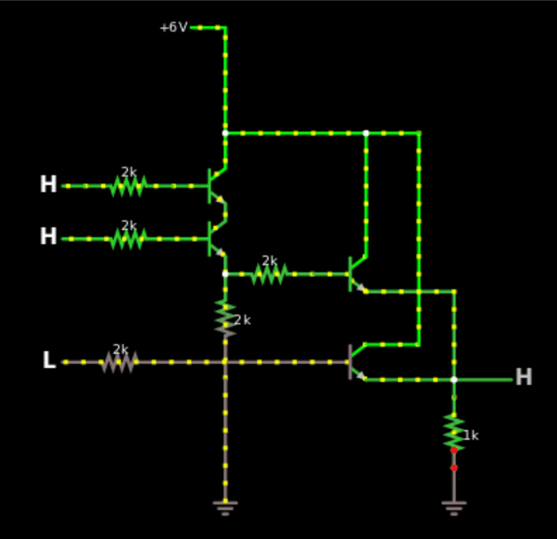
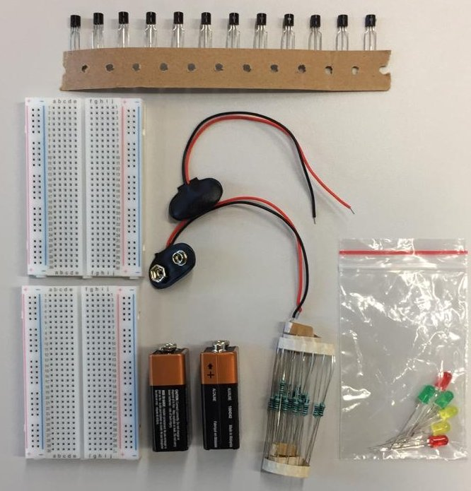
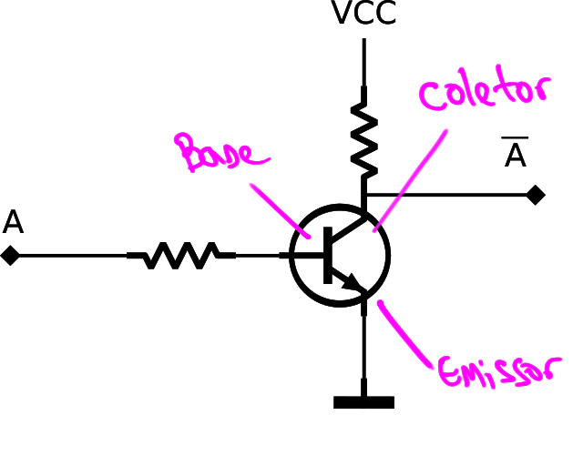

Lab 1: Transistores / CI¶
Sugestão de como trabalhar
- Realizar individualmente as simulações online
- Realizar em grupo a montagem no protoboard
Esse laboratório tem como objetivo trabalhar com os conceitos básicos de portas lógicas do tipo RTL realizadas a base de transistores discretos do tipo BJT e também trabalhar com componentes integrados (CI) da família CMOS.
Existem basicamente três níveis de simulação de componentes eletrônicos: a primeira, puramente lógica utiliza de portas lógicas "ideais" (https://simulator.io/board). Um simulador mais preciso irá utilizar transistores para a implementação dessas portas lógicas porém não leva em consideração todos os fatores físicos-eletrônicos dos componentes (http://falstad.com/circuit/). Já um simulador que leva em consideração as propriedades dos componentes é chamado de SPICE e irá gerar uma simulação mais precisa em termos físicos do circuito original (http://circuitlab.com).
Parte 1 - Circuito misterioso¶
Vamos usar o simulador do site falstad para implementar um circuito feito com transistores que implementa uma equação booleana.
- Abra o site: http://www.falstad.com/circuit/
 Arquivo Importar Arquivo Texto Copiar e colar o texto a seguir
Arquivo Importar Arquivo Texto Copiar e colar o texto a seguir
$ 1 0.000005 10.20027730826997 52 5 50 5e-11
R 368 64 320 64 0 0 40 6 0 0 0.5
g 368 432 368 496 0 0
t 320 208 368 208 0 1 -5.999999987759469 -1.926578083306543 100 default
w 368 160 368 192 0
t 320 256 368 256 0 1 -1.9265780914939181 -1.2199999820401186e-8 100 default
w 368 224 368 240 0
w 368 272 368 288 0
w 368 368 368 384 0
r 320 208 240 208 0 2000
r 240 256 320 256 0 2000
L 240 208 208 208 0 0 false 5 0
L 240 256 208 256 0 0 false 5 0
r 368 288 368 368 0 2000
r 368 288 448 288 0 2000
t 448 288 496 288 0 1 -5.999999971546844 1.625315590685889e-8 100 default
t 448 368 496 368 0 1 -5.9999999878 -6.362935157139823e-17 100 default
w 448 368 320 368 0
r 320 368 224 368 0 2000
w 496 272 496 160 0
w 496 160 368 160 0
w 368 160 368 64 0
w 496 352 544 352 0
w 544 352 544 160 0
w 544 160 496 160 0
w 496 304 576 304 0
w 496 384 576 384 0
w 576 384 576 304 0
r 576 400 576 464 0 1000
w 368 432 368 384 0
g 576 464 576 512 0 0
M 576 384 640 384 0 2.5
L 224 368 208 368 0 0 false 5 0
w 576 400 576 384 0
Vocês devem obter o seguinte diagrama:

Outro circuito misterioso¶
Implementar o outro circuito feito com transistores que implementa uma equação booleana no simulador do site falstad.
- Abra o site: http://www.falstad.com/circuit/
- Arquivo Importar Arquivo Texto Copiar e colar o texto a seguir
$ 1 0.000005 10.20027730826997 52 5 50 5e-11
R 368 64 320 64 0 0 40 5 0 0 0.5
L 240 208 208 208 0 0 false 3.6 0
L 240 256 208 256 0 0 false 3.6 0
w 368 192 368 64 0
g 368 528 368 576 0 0
M 576 336 640 336 0 2.5
L 240 304 208 304 0 0 false 5 0
f 240 208 368 208 33 1.5 0.02
w 464 192 464 64 0
w 368 64 464 64 0
f 336 480 368 480 32 1.5 0.02
w 464 224 464 272 0
w 416 272 464 272 0
w 368 224 368 240 0
w 368 240 416 240 0
w 416 240 416 272 0
w 368 384 368 336 0
w 368 336 416 336 0
w 416 304 416 336 0
w 416 336 464 336 0
w 464 336 464 384 0
w 464 336 576 336 0
w 368 416 368 464 0
w 368 496 368 528 0
w 464 416 464 528 0
w 464 528 368 528 0
w 240 304 240 352 0
w 240 352 400 352 0
w 400 352 400 400 0
f 400 400 464 400 32 1.5 0.02
w 336 480 272 480 0
w 272 480 272 256 0
w 272 256 240 256 0
w 272 256 272 144 0
w 272 144 416 144 0
w 416 144 416 208 0
f 416 208 464 208 33 1.5 0.02
f 320 288 416 288 33 1.5 0.02
f 336 400 368 400 32 1.5 0.02
w 336 400 288 400 0
w 288 400 288 224 0
w 288 224 240 224 0
w 240 224 240 208 0
w 320 288 320 304 0
w 320 304 240 304 0
Parte 2 - RTL e CMOS¶
Material¶
Cada grupo receberá:
- 2 protoboards
- 2 baterias 9V
- Jumpers macho-macho
- 10 transistores NPN s9013
- 10 transistores PNP s9012
- 20 resistores de 330
- 2 CIs CD4007
- 10 LEDs coloridos (Vermelho e amarelo)

Trabalhando¶
O grupo deve se organizar e executar da melhor forma possível (com todos participando) os módulos a seguir, utilizando:
- Entradas: Utilizar como entrada do sistema (A,B,C,...) jumpers que estarão hora conectados em GND (0) ou VCC (1).
- Saídas: A saída final do sistema deve ser representada com um LED, sendo aceso indicando lógica
1e apagado lógica0. - Validação: Uma tabela verdade do circuito deve ser apresentada e em aula demonstrado que o circuito representa a tabela.
a - NOT¶
Iremos implementar uma porta lógica do tipo NOT usando transistores BJT.

Warning
Se você perceber que algum transistor está aquecendo, desconecte a bateria e verifique novamente a montagem. Isso é um sinal que alguma coisa está errada.
Tarefa
Levante a tabela verdade do circuito recém montado, é uma not?
Tip
-
Utilize o datasheet do transistor para entender a montagem
-
Mexa na chave para aplicar
0ou1na entrada do circuito.
Implemente agora uma porta lógica do tipo NOT usando transistores MOS utilizando o CD4007.
b - OR¶
Implemente uma porta lógica do tipo OR usando transistores BJT. Essa porta terá duas entradas e uma saída, cada entrada deve ser uma chave e a saída um LED.
Tip
Utilize a página a seguir para ter ideias de como implementar as portas lógicas em RTL:
Circuitos Integrados - CI¶
Circuitos integrados são componentes eletrônicos que possuem internamente dezenas a milhares de transistores que implementam circuitos eletrônicos, facilitando e possibilitando o desenvolvimento de projetos de hardware mais complexos.
Existem várias 'famílias' de CI que implementam portas lógicas, iremos trabalhar com uma versão chamada de série TTL 7400. Exemplos de componentes dessa famílias:
- 7400: Quatro portas NAND de duas entradas
- 7401: Quatro portas NAND de duas entradas com coletor aberto
- 7402: Quatro portas NOR de duas entradas
- 7403: Quatro portas NAND de duas entradas com coletor aberto
- 7404: Seis inversores (porta NOT)
Para a lista completa acesse: https://pt.wikipedia.org/wiki/Lista_dos_circuitos_integrados_da_s%C3%A9rie_7400
Vamos continuar no TinkerCad.
a - NOT¶
Vamos usar o componente 7404 que possui 6 NOTs para fazer a mesma coisa que fizemos com os transistor discreto:

b - Equação¶
Implemente a equação com CIs da família 74xx utilizando apenas portas nand e nor.
Q = (A xor B) or not(C)
Tip
- Identifique os componentes
- Procure na lista qual o seu nome
- Analise os pinos desse componente
- Faça a ligação e teste por parte
Praticando no papel¶
Questão extraída do EXAME NACIONAL DE DESEMPENHO DOS ESTUDANTES 2014
Um processo monitora três parâmetros para controle de qualidade: A, B, C. Cada parâmetro possui um
valor na decisão final da qualidade. A existência do parâmetro A pesa 30% na decisão final, enquanto os
parâmetros B e C pesam 30% e 40%, respectivamente. O grau de aprovação do processo é dado pela soma
dos percentuais desses três parâmetros. O produto gerado pelo processo é considerado aprovado, caso o
grau de qualidade seja superior ou igual a 60%, e reprovado, se o grau de qualidade for inferior ou igual a
30%.
Caso o grau de qualidade esteja entre 30% e 60%, a decisão de aprovação ou reprovação é indiferente.
Por exemplo, se um produto apresentar os parâmetros A e B, terá grau de qualidade de 30%+30% = 60%,
levando à sua aprovação.
Com base na situação descrita, projete um circuito lógico com o menor número possível de portas lógicas,
para determinar a aprovação ou não do produto de acordo com a presença de seus parâmetros. As entradas
do circuito serão os sinais A, B,C, e a saída será um sinal Z. Para atingir esse objetivo, faça o que se pede nos itens a seguir.
- Monte uma tabela verdade do sistema com a formação
A,B,C. (valor: 4,0 pontos) - Desenhe o circuito final otimizado utilizando portas lógicas. (valor: 6,0 pontos)
- (extra, não tinha no enade) Implemente a lógica encontrada com CIs da família 74xx